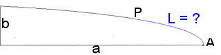

Numerische Integration

- y =

- x0= xn=
- Anzahl Teilintervalle (≤200)
Graphik
Resultate
- Trapez:
Simpson:
Links: Rechts:
Mitte:
Klicken Sie nach einer Änderung in einem Eingabefeld auf 'Go'.
Die Simpson-Methode benötigt eine gerade Anzahl Intervalle
Anwendungsbeispiele
1) Siehe Beispiel beim Start: Wie gross ist der Inhalt der Fläche unter der Gausskurve von 0 bis 5?Resultat: Simpson-Wert = 0.5 (wäre der exakte Wert für das Integral von 0 bis ∞)
2) Wie gross ist der Umfang u einer Ellipse mit den Halbachsen a = 11 und b = 1.75?
Mit der Parameterdarstellung x=a cost, y=b sint (t ∈ [0,2π]) gilt:
u = \(\sf 4\int\limits_0^{\pi/2}\sqrt{\dot{x}^2 + \dot{y}^2}\: dt \) = \(\sf 4\int\limits_0^{\pi/2}\sqrt{a^2 sin^2 t + b^2 cos^2 t}\: dt \)
Für dieses (elliptische!) Integral gibt es keine exakte Formel, man muss sich also z.B. mit numerischer Integration behelfen.
Eingabe im Feld 'y = ': 4*sqrt(11*11*sin(x)*sin(x) + 1.75*1.75*cos(x)*cos(x))
x0 = 0 und xn = 1.5707963268 (copy and paste!).
Wählen Sie 40 Teilintervalle, klicken Sie dann auf 'Berechne' und Sie erhalten den Simpson-Wert u = 45.52858.
3) Wie gross ist die Bogenlänge L einer Ellipse mit den Halbachsen a = 11 und b = 1.75 zwischen t1=0 und t2=π/4?
Der Bogen reicht vom Punkt A(11|0) bis zum Punkt P.
Koordinaten von P: x = 11cos(π/4) = 7.778, y = 1.75sin(π/4) = 1.237

Eingabe im Feld 'y = ': sqrt(11*11*sin(x)*sin(x) + 1.75*1.75*cos(x)*cos(x))
Eingabe x0 = 0 und xn = 0.7853981634. Bei 20 Teilintervallen erhalten Sie den Simpson-Wert L = 3.57979.
©1997 - 2026 www.mathematik.ch |🔍